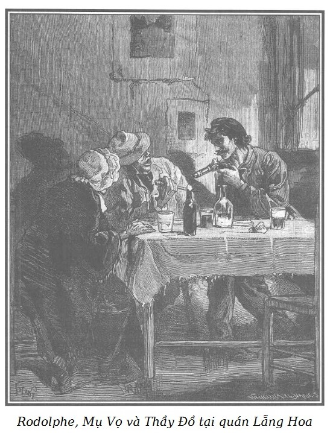

Gửi Marie lại cho bà Georges, sau đó một ngày, Rodolphe vẫn ăn mặc kiểu thợ thuyền, đến quán Lẵng Hoa vào lúc giữa trưa ngay gần barie Bercy. Hôm trước, lúc mười giờ tối, Chọc Tiết đã đến đúng chỗ Rodolphe dặn, kết quả cuộc hẹn hò ấy sẽ kể lại sau.
Đúng giờ Ngọ, mưa như trút nước. Do mưa không ngớt, nước sông Seine đã dâng lên rất cao và làm ngập một phần bến cảng. Chốc chốc Rodolphe lại nóng ruột nhìn về phía barie, cuối cùng phát hiện từ xa một người đàn ông và một người đàn bà che ô đi tới. Ông nhận ra Thầy Đồ và mụ Vọ.
Hai tên này đã thay đổi hoàn toàn, tên cướp đã vứt bỏ bộ quần áo tồi tàn và dáng điệu hung tợn tàn bạo. Lão mặc một áo đuôi tôm bằng vải len hải ly xanh và đội một cái mũ tròn. Cà vạt và áo trắng muốt. Nếu không có bộ mặt gớm guốc và ánh mắt man rợ luôn luôn rực lửa, láo liên, người ta có thể cho đó là một người giàu có lương thiện bước đi khoan thai, đĩnh đạc.
Mụ Vọ cũng rất diện, mụ đội cái mũ trùm đầu màu trắng, choàng một cái khăn quàng lụa lớn bằng tơ kiểu Cachemire*, tay xách một cái bị to.
Sợi len từ lông dê Cachemire, đặc biệt quý hiếm, chỉ có ở vùng Cachemire, phía Bắc Ấn Độ đến phía Bắc Mông Cổ.
Thay vì những tiếng lóng ở quán Thỏ Trắng, Thầy Đồ dùng một thứ ngôn ngữ gần như kiểu cách nhưng lại càng đáng sợ hơn vì cách nói ấy báo hiệu một kẻ có học vấn, trái hẳn với tật khoác lác, tàn bạo của thằng kẻ cướp.
Khi Rodolphe đến gần, Thầy Đồ cúi sát xuống chào, mụ Vọ cũng gật đầu lễ phép. Thầy Đồ nói:
– Thưa ông, kẻ hèn này rất vui lòng được phục vụ ông, hay nói khác đi là được hân hạnh làm quen với ông một lần nữa thì đúng hơn. Hôm kia, ông đã ban ơn cho tôi hai quả đấm có thể quật ngã một con tê giác. Nhưng bây giờ, xin thôi không nói chuyện đó nữa. Đối với ông thì đó là một trò đùa, tôi chắc như vậy, một trò đùa bình thường vậy. Ta xí xóa thôi! Những lợi ích quan trọng đã tụ hội chúng ta lại. Hôm qua, lúc mười một giờ đêm tôi đã gặp tay Chọc Tiết ở quán Thỏ Trắng. Tôi đã hẹn y hôm nay, tại đây, trong trường hợp y muốn làm ăn với chúng tôi, nhưng hình như y đã từ chối thẳng thừng.
– Vậy ông nhận lời chứ?
– Nếu không muốn, thưa ông… Tên ông là?
– Rodolphe.
– Thưa ông Rodolphe, chúng ta vào quán Lẵng Hoa; cả tôi, cả mụ nhà tôi đều chưa ăn. Chúng ta sẽ vừa ăn vừa bàn việc.
– Đồng ý thôi!
– Chúng ta vẫn có thể vừa đi vừa nói chuyện. Ông và Chọc Tiết phải bồi thường cho tôi và mụ nhà tôi mà không nên oán thán… Các ông đã làm chúng tôi hỏng ăn hai nghìn franc. Mụ Vọ đã hẹn gặp một gã cao lớn mặc đồ tang ở gần Saint-Ouen, người đã đến tối hôm ấy hỏi dò ông ở quán Thỏ Trắng. Gã đặt giá hai nghìn franc để chơi ông một vố gì đó. Chọc Tiết đã giải thích cho tôi gần như thế.
– Tôi đang suy nghĩ đây.
– Mụ yêu dấu, vào quán Lẵng Hoa chọn một khoang và gọi món sườn, thịt bê, rau trộn và hai chai rượu hảo hạng; bọn này sẽ đến sau.
Mụ Vọ không một phút rời mắt khỏi Rodolphe, mụ chỉ đi khi đã nháy mắt với Thầy Đồ. Lão này lại nói:
– Tôi đã nói với ông, ông Rodolphe ạ, tay Chọc Tiết đã mở mắt cho tôi về cái món hai nghìn franc.
– Mở mắt, có nghĩa là thế nào?
– Đúng thế… tiếng đó hơi lạ tai đối với ông, tôi muốn nói là tay Chọc Tiết đã cho tôi biết nhiều điều, mà người cao lớn mặc tang phục muốn gây cho ông một vố bằng giá hai nghìn franc.
– Được… Được…
– Như thế chưa phải là tốt hẳn đâu ông trẻ ạ. Sáng hôm qua tay Chọc Tiết đã gặp mụ Vọ gần Saint-Ouen, y không rời mụ một bước từ khi thấy gã cao lớn mặc tang phục đến, đến nỗi gã không dám lại gần. Thế là hai nghìn franc mà nếu muốn hưởng phải làm được cái gì đó đối với ông đã đi tong, đấy là chưa kể năm trăm franc tiền chuộc cái ví. Nhưng chúng tôi chưa trả lại cái ví được – mà cũng không trả là đằng khác – khi lục kĩ thấy những giấy tờ trong đó còn đáng giá hơn nhiều.
– Cái ví đựng nhiều thứ có giá trị lớn ư?
– Cái ví đựng nhiều giấy tờ khá lý thú, tuy phần lớn đều viết bằng tiếng Anh. Và tôi giữ chúng ở đây. – Tên cướp vừa nói vừa vỗ vào túi áo đuôi tôm.
Biết Thầy Đồ còn giữ những giấy tờ lấy được từ Tom hôm trước, Rodolphe rất mừng vì đối với ông những giấy tờ đó rất quan trọng. Những điều ông căn dặn Chọc Tiết không có mục đích nào khác là ngăn ngừa Tom đến gần mụ Vọ, mụ này chắc đang giữ chiếc ví mà Rodolphe hy vọng sẽ lấy được.
– Tôi giữ những giấy tờ này như giữ bản mệnh vì tôi sẽ tìm thấy địa chỉ của gã mặc đồ tang và bằng cách này cách khác tôi sẽ lần tìm ra gã.
– Chúng ta có thể bàn chuyện đánh quả nếu anh muốn, nếu trúng quả tôi sẽ mua lại của anh những giấy tờ đó vì tôi biết người đó; những thứ đó cần đối với tôi hơn là đối với anh.
– Rồi sau hẵng hay! Hãy trở lại việc của chúng ta đã.
Rodolphe nói:
– Thế này, tôi đã tính với tay Chọc Tiết một vụ làm ăn tuyệt hay, lúc đầu y nhận lời rồi lại bỏ cuộc. Thằng cha gàn bỏ mẹ, khi tuyên bố bỏ cuộc, y đã lưu ý tôi.
– Y đã lưu ý ông à?
– Quái nhỉ, anh thật tài hiểu ý người khác.
– Làm thầy đồ dạy học trò chính là nghề của tôi mà lại!
– Y lưu ý tôi rằng nếu y không muốn kiếm ăn bằng đổ máu thì y cũng không muốn khiến người khác chán ngán và liệu anh có thể giúp tôi một tay được chăng?
– Tôi muốn biết, không phải là soi mói đâu, tại sao ông lại hẹn Chọc Tiết sáng qua đến Saint-Ouen. Điều đó khiến y có cơ hội gặp mụ Vọ, y lúng túng khi trả lời tôi điều đó.
Rodolphe kín đáo cắn môi, nhún vai trả lời.
– Thế này, tôi chỉ mới nói với y một phần dự định của tôi… anh hiểu chứ… Tôi không dám chắc liệu y có quyết định làm ăn không?
– Thế mới cao tay.
– Còn hơn cả cao tay, vì tôi có những hai cách để thành công kia mà.
– Ủa?
– Nhất định thế!
– Ông là người biết phòng xa, ông đã hẹn Chọc Tiết ở Saint-Ouen để…
Sau một phút do dự, Rodolphe bịa ra một câu chuyện gần như thật để che đậy sự vụng về của Chọc Tiết. Ông bảo:
– Như thế này, cái quả tôi bàn rất đậm vì chủ căn nhà ta định chơi ấy lúc này về quê. Tôi chỉ lo nhất là hắn trở về đột ngột. Để cho thật êm, tôi tự nhủ: Ta chỉ có một việc phải làm…
– Có phải ông muốn biết chắc chắn là lão chủ đó thực sự đã về quê?
– Đúng như anh nói… Tôi đi Pierrefitte nơi hắn có nhà nghỉ, ở đây tôi có người chị họ làm công trong nhà đó, anh hiểu chứ?
– Hiểu, cậu cả! Rồi sao nữa?
– Người chị họ tôi nói ngày kia chủ nhà mới trở về Paris.
– Ngày kia?
– Phải.
– Rất tốt, nhưng tôi muốn quay lại câu hỏi ban nãy… Tại sao ông hẹn Chọc Tiết ở Saint-Ouen?
– Anh chẳng thông minh chút nào… Từ Pierrefitte đến Saint-Ouen bao xa?
– Chừng một dặm.
– Và từ Saint-Ouen đến Paris?
– Cũng thế.
– Vậy thì, nếu không thấy có ai ở Pierrefitte, nghĩa là nhà vắng chủ, cũng có thể làm ăn được, ở đấy không bằng ở Paris nhưng cũng khá, tôi trở lại Saint-Ouen tìm Chọc Tiết đang đợi tôi ở đấy. Chúng tôi trở lại Pierrefitte bằng con đường tắt mà tôi biết và…
– Tôi hiểu, nếu ngược lại, vụ làm ăn sẽ thực hiện ở Paris.
– Chúng tôi sẽ đi đến barie Étoile, theo con đường Révolte và từ đó đến đường Gái Góa.
– Chỉ cách một bước chân thôi, rất đơn giản. Ở Saint-Ouen, ông được một công đôi việc, như thế rất mực khôn ngoan. Bấy giờ tôi đã hiểu sự có mặt của Chọc Tiết ở Saint-Ouen…
– Còn ngôi nhà ở đường Gái Góa vắng chủ. Không có ai ở, trừ người gác cổng.
– Rõ rồi! Và đó là một quả rất to?
– Người chị họ của tôi bảo có đến sáu mươi nghìn franc bằng vàng trong phòng ông chủ.
– Ông biết cách bố trí trong nhà chứ?
– Biết quá đi chứ! Chị họ tôi làm ở đấy một năm nay và nói cho tôi biết nhiều lần rằng ông chủ rút số tiền đó ở ngân hàng để đầu tư vào một việc khác, nên ý đồ đột ngột đến với tôi ngay… vì người gác cổng rất khỏe nên tôi đã bàn với Chọc Tiết… Tay này sau khi đắn đo mãi đã đồng ý nhưng rồi lại nhăn nhăn nhó nhó, nhưng y không thể phản bạn.
– Càng tốt, nhưng chúng ta đã đến đây, tôi không biết ông có cảnh giác như tôi không, nhưng không khí buổi sáng khiến tôi thấy đói.
Mụ Vọ đã đứng ở ngưỡng cửa quán ăn.
– Ở đây, ở đây! Tao đã đặt bữa ăn sáng cho bọn mình rồi.
Rodolphe có dụng ý để tên cướp đi vào trước, nhưng Thầy Đồ khéo léo giữ lịch sự khẩn khoản mời Rodolphe vào trước.
Trước khi ngồi vào bàn, Thầy Đồ gõ nhẹ vào vách gỗ hai ngăn bên buồng xem có đủ kín đáo không.
– Chẳng cần phải nói nhỏ quá, vách ngăn không mỏng đâu. Lát nữa người ta đem thức ăn đến cùng một lượt, chúng ta sẽ không bị quấy rầy trong câu chuyện.
Cô hầu bàn đem bữa ăn sáng đến.
Trước khi cửa ra vào đóng lại, Rodolphe liếc thấy người bán than Murph ngồi trịnh trọng ở bàn ăn phòng bên cạnh.
Phòng họ ngồi ăn dài nhưng hẹp, đón ánh sáng từ cửa sổ mở ra phố, đối diện với cửa ra vào.
Mụ Vọ ngồi quay lưng lại cửa sổ. Thầy Đồ ngồi một phía bàn, Rodolphe phía bên kia.

.Cô hầu bàn đi ra, tên cướp đứng dậy bưng suất ăn đến ngồi ngay bên Rodolphe để ông khỏi thấy phía cửa ra vào.
– Chúng ta cứ nói chuyện thoải mái và không cần nói to quá.
– Và anh ngồi chắn giữa tôi và cửa ra vào để ngăn không cho tôi ra… – Rodolphe lạnh lùng nói.
Thầy Đồ gật đầu rồi kéo từ trong túi bên chiếc áo đuôi tôm ra một lưỡi lê tròn và to bằng chiếc lông ngỗng lớn có cán gỗ, nắm trong bàn tay lông lá.
– Ông thấy chứ?
– Thấy.
– Muốn, thì chơi vào! – Và nhướng lông mày, nhăn cái trán dẹt như trán cọp, lão làm một cử chỉ đe dọa.
– Hãy tin ở gái này, đây đã mài con dao của lão già, sắc phải biết.
Rodolphe ung dung đưa tay xuống dưới áo khoác lôi ra một khẩu súng ngắn cho Thầy Đồ thấy và lại nhét vào túi.
– Chúng ta vốn dĩ dễ thỏa thuận với nhau nhưng nếu ông không đồng tình, nếu có điều gì khó chơi và nếu người ta đến đây thì dù ông có giăng bẫy hay không, tôi sẽ thịt ông, hiểu chưa? – Thầy Đồ quắc mắt lườm Rodolphe.
– Còn tao, tao sẽ nhảy bổ vào hắn để giúp lão, lão trùm ạ. – Mụ Vọ cũng rít lên.
Không nói một lời, Rodolphe nhún vai, tự rót cho mình một cốc rượu và uống. Sự bình tĩnh của Rodolphe khiến tên cướp phải kính nể.
– Tôi chỉ cảnh cáo ông thế thôi!
– Tốt, tốt, hãy cất cái xiên quay gà vào túi đi, không có gà giò cho ông tiêm mỡ đâu, tôi là loại gà trống già sắc cựa, anh chàng ơi! – Rodolphe nói. – Bây giờ bàn vào việc đi.
– Bàn việc… được, nhưng đừng coi thường mũi lê của tôi, nó không gây tiếng động, không quấy rầy ai.
– Và ta làm rất gọn, phải không đại ca? – Mụ Vọ chêm vào.
– À này, – Rodolphe nói với mụ Vọ – có đúng là đằng ấy biết cha mẹ Sơn Ca không?
– Lão nhà tôi có hai bức thư trong cái ví của gã mặc đồ tang nói về chuyện này, nhưng con bé sẽ không thấy những thứ đó, cái con béo sung ấy. Rồi đây tao sẽ tự móc mắt nó. Ối! Khi tao lại tìm thấy nó ở quán Thỏ Trắng, nó cứ liệu cái thần hồn.
– Này mình, chúng ta cứ nói, cứ nói mãi và công việc chưa đi đến đâu.
– Ta có thể “gẫu” trước mụ này được không?
– Yên trí! Mụ đã thạo nghề và có thể giúp chúng ta canh chừng, dò la, cất giấu, tiêu thụ… Mụ có đủ đức tính của một người nội trợ, – tên cướp đưa tay cho con mụ ghê tởm và nói thêm – ông chưa hình dung được mụ đã giúp tôi được khối việc… Này, mụ sẽ bị lạnh khi ra ngoài. Để khăn lên ghế cùng cái lẵng đi.
Mụ Vọ bỏ khăn quàng ra.
Dù nhanh trí và khá tự chủ, Rodolphe không khỏi sửng sốt khi nhìn thấy lủng lẳng đầu một sợi dây chuyền giả móc vào cái vòng bạc ở cổ mụ một chiếc tượng thánh nhỏ bằng đá lam ngọc, hoàn toàn giống bức tượng mà bà Georges đã tả, bức tượng thánh mà con trai bà đeo ở cổ khi bị bắt cóc.
Từ khám phá đó, một ý nghĩ đột ngột nảy ra trong đầu Rodolphe. Theo lời Chọc Tiết, Thầy Đồ vượt ngục đã sáu tháng nay, đã tự làm biến dạng mình, khiến mọi tìm kiếm của cảnh sát đều vô hiệu, và chồng bà Georges cũng vượt ngục từ sáu tháng nay, không tăm tích.
Từ sự khớp nhau kỳ lạ đó, Rodolphe nghĩ rằng Thầy Đồ có thể là chồng người đàn bà đáng thương ấy. Thằng khốn nạn đó trước đây cũng thuộc tầng lớp khá giả trong xã hội, mà Thầy Đồ thì ăn nói lịch sự ra dáng.
Hồi ức này thức tỉnh hồi ức khác, Rodolphe nhớ lại có một lần bà Georges kể, vừa kể vừa run, khi chồng bà bị bắt, mặc dù lão chống cự quyết liệt trong tuyệt vọng và suýt nữa thì chạy thoát nhờ sức khỏe ghê gớm. Nếu tên cướp này là chồng bà Georges, nhất thiết lão phải biết số phận đứa con trai của họ. Hơn nữa, Thầy Đồ lại giữ những giấy tờ liên quan đến lai lịch Marie trong cái ví của Tom bị lão trấn lột.
Rodolphe có thêm những bằng chứng mới vô cùng quan trọng để kiên trì thực hiện dự kiến của mình. May thay, tên cướp còn bận sẻ thức ăn cho mụ Vọ nên không chú ý đến nét tư lự của Rodolphe.
Rodolphe nói với mụ Vọ:
– Mẹ kiếp! Bà có sợi dây đẹp thật.
– Đẹp… mà không mấy tiền đâu! – Mụ cười. – Vàng giả đấy mà, tôi đang chờ lão nhà tôi sắm cho tôi một sợi dây bằng vàng thật.
– Cái đó còn tùy ở ông đây, mụ ạ… Nếu chúng ta thắng quả vụ này, cứ yên trí là sẽ có.
– Sao họ làm hàng rởm mà giống như thật, – Rodolphe nói tiếp – và cái vật nho nhỏ, xanh xanh ở cuối dây chuyền là cái gì thế?
– Đó là quà của lão nhà tôi trong khi chờ lão mua cho tôi chiếc đồng hồ, đúng không lão trùm?
Rodolphe thấy những suy đoán của mình đúng đến một nửa. Ông bồn chồn chờ đợi câu trả lời của Thầy Đồ. Lão vừa ăn vừa nói:
– Vẫn phải giữ cái đó cho dù có đồng hồ. Đấy là bùa hộ mệnh, đeo lấy phước.
– Bùa hộ mệnh? – Rodolphe ra vẻ hững hờ, hỏi. – Anh cũng tin ở bùa hộ mệnh ư? Và quái thật, anh tìm ở đâu ra thế, bảo cho tôi biết nơi sản xuất nó.
– Người ta không làm thứ đó nữa, thưa ông thân mến, cửa hàng đó đã đóng cửa. Trông thì vậy, nhưng vật trang sức này đã có từ xưa… đã ba đời nay đấy. Tôi quý nó lắm, vật gia truyền mà. – Lão nói và mỉm cười rất khả ố. – Chính vì vậy mà tôi đem cho mụ nhà tôi để lấy may trong những vụ làm ăn. Mụ phụ lực cho tôi đến là thành thạo, vào việc ông sẽ thấy, rồi ông sẽ thấy… Nếu chúng ta còn đánh quả với nhau vài vụ nữa. Nhưng trở lại việc của chúng ta đi. Ông nói vậy là ở chỗ đường Gái Góa…
– Ở số nhà 17, có một lão giàu sụ tên là…
– Tôi sẽ không tò mò hỏi tên làm gì. Ở đây, như ông nói, có sáu mươi nghìn franc bằng vàng phải không?
Rodolphe gật đầu công nhận.
– Và ông nắm kĩ về cách bố trí nhà ấy chứ?
– Rất kĩ.
– Đường vào có khó không?
– Một bức tường cao bảy bộ về phía đường Gái Góa, những cửa sổ ngang nhau, nhà chỉ có một tầng trệt.
– Chỉ có một người gác cổng kho vàng đó?
– Một người.
– Thế kế hoạch đột nhập của ông ra sao? – Thầy Đồ hỏi một cách thờ ơ.
– Đơn giản thôi, trèo lên tường, mở cửa bằng móc hoặc bật các cánh cửa nhỏ từ bên ngoài.
– Nếu người gác thức dậy? – Thầy Đồ hỏi và nhìn Rodolphe trừng trừng.
– Thế thì vô phúc cho hắn. – Rodolphe phác một cử chỉ đầy ý nghĩa. – Như vậy đấy, anh hiểu chưa?
– Chắc ông biết là tôi chưa thể trả lời ông trước khi tự mình xem xét kĩ, có nghĩa là với sự giúp đỡ của vợ tôi; nhưng nếu tất cả những điều ông nói là chính xác, tôi thấy ta cần phải làm ngay tức khắc… ngay tối nay.
Và tên cướp lại nhìn xoáy vào Rodolphe.
– Tối nay… không được. – Rodolphe trả lời lạnh lùng.
– Tại sao? Tay nhà giàu ngày kia mới về kia mà?
– Đúng, nhưng với tôi, không thể thực hiện tối nay được.
– Thật thế ư? Này! Tôi không thể để sang ngày mai được.
– Vì lẽ gì vậy?
– Vì lẽ ông không cho làm tối nay. – Tên cướp cười gằn.
Suy nghĩ một lúc Rodolphe nói:
– Thôi được. Đồng ý tối nay. Chúng ta sẽ gặp nhau ở đâu?
– Gặp lại nhau? Chúng ta sẽ không rời nhau. – Thầy Đồ nói.
– Sao?
– Việc gì phải rời nhau, nếu trời lạnh, chúng ta sẽ đi dạo nhìn qua phố xá cho đến tận đường Gái Góa. Ông sẽ thấy mụ nhà tôi làm việc như thế nào, quay trở lại, ta đi nhậu ở một hầm rượu trong khu Champs-Élysées… Tôi biết chỗ đó, ngay gần sông; và nếu đúng căn nhà đường Gái Góa vắng người, ta sẽ tới đó vào lúc mười giờ.
– Đến giờ đó tôi sẽ lại gặp anh.
– Ông có muốn làm ăn với nhau không?
– Tất nhiên.
– Vậy thì chúng ta sẽ không rời nhau tối nay, bằng không…
– Thì sao?
– Tôi đoán ông định giăng bẫy bắt tôi vì thế ông muốn đi.
– Nếu tôi muốn giăng bẫy thì anh cấm tôi giăng tối nay?
– Tất cả là ở đó! Ông không thể đoán trước được tôi đề nghị làm sớm thế, là để ông không thể rời khỏi chúng tôi, do đó ông chẳng báo được cho ai.
– Anh không tin tôi ư?
– Tin chứ! Vấn đề ông đưa ra có thể có phần nào đúng và chỉ cần một nửa sáu mươi nghìn franc cũng bõ để lao vào. Tôi cũng muốn thế lắm chứ, nhưng tối nay hoặc không bao giờ nữa! Nếu như phải thôi hẳn, tôi sẽ hiểu rõ về ông, và đến lượt tôi, tôi sẽ có cách hầu hạ lại ông, không chóng thì chầy, một món nhà nghề của tôi đấy!
Mụ Vọ chêm vào:
– Và tôi sẽ đáp lễ lại ông, cứ cầm chắc như thế. Rặt những chuyện vớ vẩn. Tôi cũng nghĩ như lão trùm, hoặc tối nay hoặc không bao giờ.
Rodolphe bối rối; nếu để lỡ dịp này không bắt Thầy Đồ thì chắc chắn chẳng bao giờ có dịp nào khác nữa. Từ nay tên cướp sẽ đề phòng, hoặc nếu có người nhận ra lão, bắt và đưa vào tù thì lão sẽ mang theo những bí mật mà Rodolphe thiết tha muốn biết.
Tin vào sự may rủi, tin vào sự khôn ngoan, gan dạ và sức khỏe của mình, ông nói với Thầy Đồ:
– Tôi thỏa thuận như vậy, từ giờ đến đêm chúng ta sẽ không rời nhau.
– Thế thì chơi thôi! Nhưng bây giờ đã hai giờ. Từ đây đến đường Gái Góa còn xa, trời lại mưa như trút, trả tiền đi và chúng ta gọi một chiếc xe.
– Nếu đi xe, trước khi đi tôi muốn hút một điếu xì gà.
– Được thôi! Mụ vợ thân yêu của tôi sợ khói thuốc.
– Tuyệt! Tôi sẽ chạy đi mua thuốc. – Rodolphe nói và đứng dậy.
Thầy Đồ ngăn Rodolphe lại:
– Ông khỏi bận tâm về việc đó, mụ vợ tôi sẽ đi. – Lão đã đoán được ý định của Rodolphe.
Mụ Vọ đi ra, Thầy Đồ khoái chí:
– Đảm đang chưa, lại khéo chiều nữa! Mụ có thể vì tôi mà nhảy vào lửa!
– Nói đến lửa, ở đây, mẹ kiếp! Chẳng ăn chút nào. – Rodolphe nói, hai tay để dưới áo.
Vừa nói chuyện với Thầy Đồ, ông vừa lấy bút chì và một mảnh giấy nhỏ trong túi áo gi-lê viết vội vài chữ, cố ý viết từng chữ cách nhau để khỏi chồng chữ nọ lên chữ kia vì phải viết lén dưới áo. Phải làm sao để Thầy Đồ không biết tí gì và mảnh giấy đó phải được gửi đến tận nơi.
Rodolphe đứng dậy đến bên cửa sổ vừa hát khe khẽ vừa gõ nhịp vào kính cửa. Thầy Đồ cũng đến cửa sổ và nhìn qua khung kính, nói với Rodolphe vẻ hờ hững.
– Ông hát bài gì thế?
– Tôi hát bài Em sẽ chẳng có bông hồng của anh.
– Bài ấy hay hết ý. Tôi chỉ muốn thử nhìn xem bài hát có làm ai qua đường chú ý mà quay lại không?
– Tôi không có chủ ý như thế.
– Hớ rồi chú mình ơi! Vì anh gõ nhịp mạnh như thế nên tôi nghĩ… Nhưng này, người gác cổng nhà ở đường Gái Góa có thể là một tay dám chơi, nếu hắn chống lại mà ông thì chỉ có mỗi một khẩu súng, và như thế thì ồn lắm, trái lại với cái này – Thầy Đồ đưa cho Rodolphe thấy cán lưỡi lê – sẽ không có tiếng động, không làm phiền ai cả.
– Có phải anh định thịt hắn không? Nếu có ý ấy thì anh đừng nghĩ đến nữa. Thực tế đã có gì đâu. Đừng trông cậy tôi làm việc đó.
– Nhưng nếu hắn thức?
– Chúng ta sẽ chuồn.
– Hay quá! Tôi hiểu lầm ông. Tốt hơn hết là chúng ta thỏa thuận với nhau mọi mặt trước đã! Vậy là chỉ có mỗi việc trèo tường, bẻ khóa, ăn trộm thôi chứ gì?
– Thế thôi.
– Cứ như thế nhé!
Và vì tao không rời mày một phút, tao sẽ không để cho mày gây đổ máu. Rodolphe nghĩ thầm.